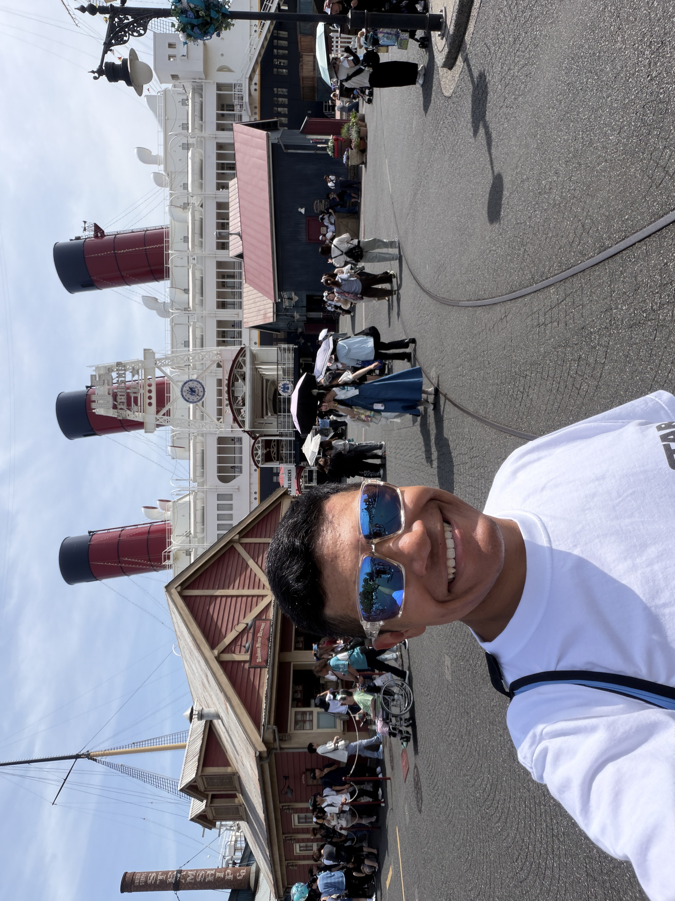

A Short Overview
I am the first generation in my family to attend college and a graduate from Seton Home Study School. I have lived in Texas my whole life and what attracted me to TCU was the fact it had always been my dream school growing up. TCU's appeal strengthened when I saw the school as a place where I can excel in both academics and social growth through new friendships and executive positions in clubs.
What I Want to Learn
My goals for this specific code development course include enriching in my knowledge of different coding languages by understanding JavaScript somewhat fluently. I also hope to gain better confidence in navigating VS Code and Github pages due to my current knowledge being rather simplistic.
Extracurriculars
Aside from academics, I am actively involved in extracurriculars on campus. Among these extracurriculars are Talking Frogs (a public speaking club), TCU Esports, TCU Twisters (a country line dance group), TCU Newman Center, SACNAS, and the Italian Club. In the summer time, I enjoy giving back to TCU by volunteering for Frog Camp and welcoming incoming Frehsmen. I also try to continue my gofling skills whenever I have time to visit the range or squeeze a few rounds in. Lastly, I deeply enjoy video games due to them being an outlet for me to alleviate stress.

More on Golf
Before arriving to TCU in Fall 2024, I was a very active junior golfer throughout middle and high school. I competed on the North Texas Junior PGA, South Texas Junior PGA, Texas Junior Golf Tour, and Hurricane Junior Golf Tour circuits. By playing this life changing sport, I developed my love for traveling due to the different tournaments taking me throughout the great state of Texas and larger United States.
More on Traveling
There is something about traveling that excites me. I am an avid fan of the Disney and Universal theme parks and try to visit them given the chance. Up until this year, Disney World in Florida was my favorite Disney Park. But once I visited Tokyo Disneyland and DisneySea with a study abroad through TCU in Japan, it was finally overthrown. Additionally, the study abroad in Japan gave me the opportunity to finally travel beyond the United States and experience a completely different culture full of rich traditions.
